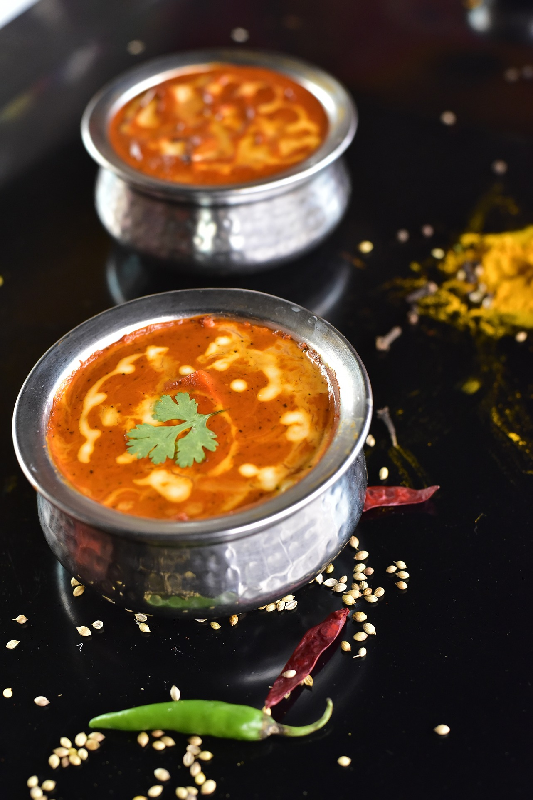
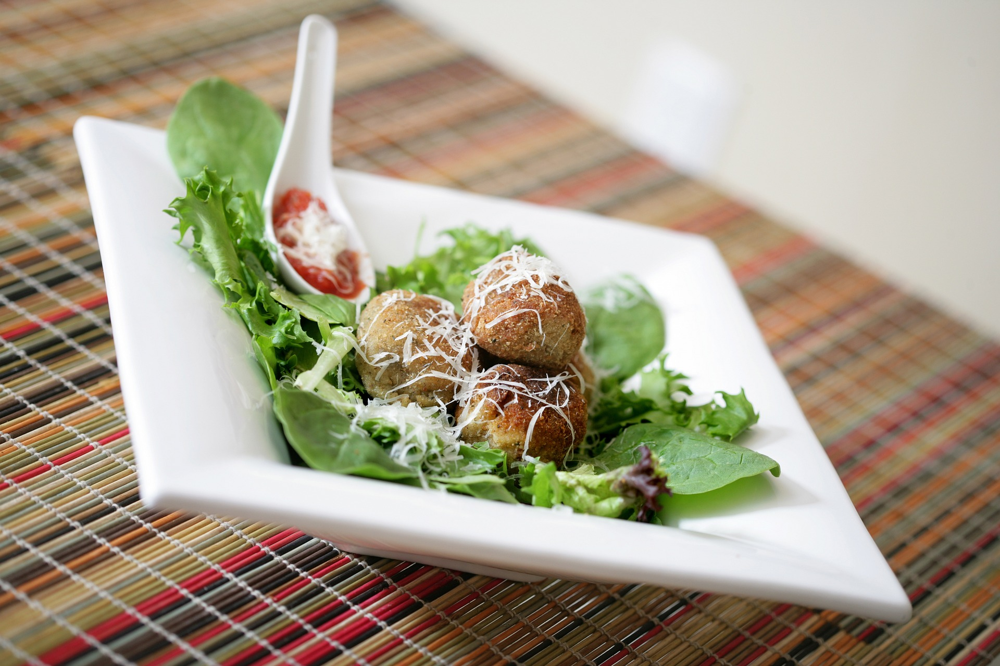
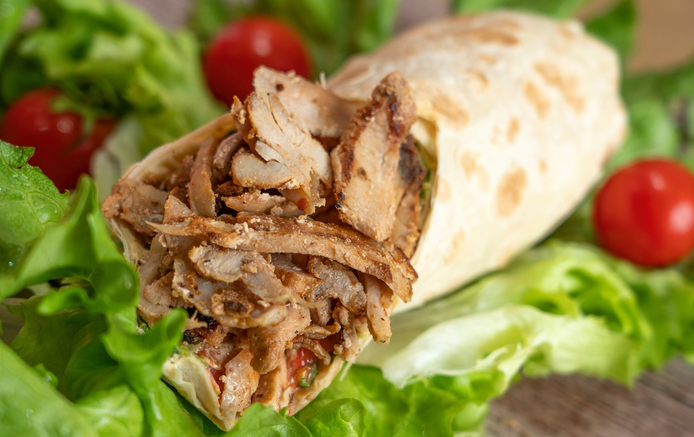

Thai Green Curry Chicken
- 1 lb boneless, skinless chicken breasts, sliced into strips
- 2 tbsp green curry paste
- 1 can (14 oz) coconut milk
- 1 cup chicken broth
- 1 cup sliced bell peppers
- 1 cup sliced onions
- 1 cup sliced mushrooms
- 2 tbsp fish sauce
- 2 tbsp brown sugar
- 2 tbsp vegetable oil
Directions:
Heat oil in a large skillet over medium heat. Add chicken and cook until browned on all sides. Add curry paste and cook for 1-2 minutes until fragrant. Add coconut milk, chicken broth, vegetables, fish sauce, and brown sugar. Simmer for 15-20 minutes or until chicken is cooked through and vegetables are tender. Serve over rice.
Indian Butter Chicken
- 1 lb boneless, skinless chicken breasts, cut into cubes
- 1 cup plain yogurt
- 1 tbsp garam masala
- 1 tbsp paprika
- 1 tbsp cumin
- 1 tbsp ground coriander
- 1 tsp turmeric
- 1/2 tsp cayenne pepper
- 2 tbsp butter
- 1 onion, chopped
- 4 cloves garlic, minced
- 1 can (14 oz) crushed tomatoes
- 1 cup heavy cream
- Salt and pepper to taste
Directions:
In a large bowl, mix together yogurt and spices. Add chicken and toss to coat. Cover and refrigerate for at least 1 hour. In a large skillet, melt butter over medium heat. Add onion and garlic and cook until softened. Add chicken and cook until browned on all sides. Add crushed tomatoes and simmer for 10-15 minutes. Stir in cream and season with salt and pepper. Serve over rice.
Italian Meatballs
- 1 lb ground beef
- 1/2 cup breadcrumbs
- 1/4 cup grated Parmesan cheese
- 1/4 cup milk
- 1 egg
- 2 cloves garlic, minced
- 1/4 cup chopped fresh parsley
- 1 tsp salt
Directions:
Preheat oven to 400°F (200°C). In a large bowl, mix together all ingredients until well combined. Form mixture into 1-inch meatballs and place on a baking sheet. Bake for 20-25 minutes or until golden brown and cooked through..
Sandwich Shawarma
- 1 lb boneless, skinless chicken breasts
- 1/4 cup plain yogurt
- 1/4 cup lemon juice
- 1/4 cup olive oil
- 2 cloves garlic, minced
- 1 tsp ground cumin
- 1 tsp ground cumin
- 1 tsp ground cumin
- 1 tsp paprika
- 1/2 tsp turmeric
- Salt and pepper to taste
- Pita bread or Arabic bread
- Lettuce, chopped
- Tomato, chopped
- Onion, sliced
- Tahini sauce or garlic sauce
Directions:
In a large bowl, mix together yogurt, lemon juice, olive oil, garlic, cumin, paprika, turmeric, salt, and pepper. Add chicken strips and toss to coat. Cover and refrigerate for at least 1 hour. Preheat grill or grill pan over medium-high heat. Grill chicken strips for 5-7 minutes or until cooked through. Warm pita or Arabic bread in the oven or on the grill..
Carne Asada Tacos

- Carne Asada
- 2 avocados
- 3 tbsp cotija cheese
- 1/3 cup onion, finely diced
- 1/2 cup fresh cilantro, chopped
- 6 tortillas
Directions:
Grill the carne asada until it’s cooked to your preference. Slice it against the grain, then chop it into small pieces. Use a spoon to mash the avocado and spread a large spoonful or two onto each tortilla. Then, top the avocado with chopped carne asada, a sprinkle of cotija cheese, some diced onion and fresh cilantro. Squeeze fresh lime juice on top.